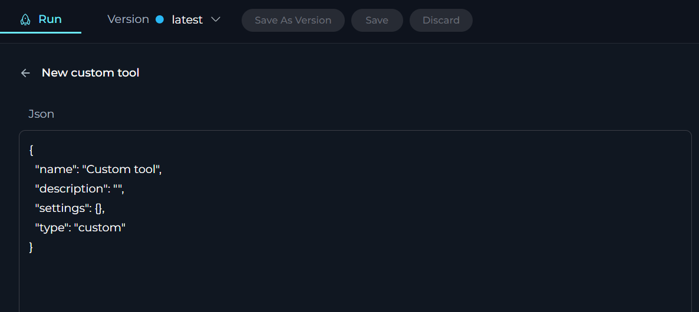

Agents
My libraries - Agents Page
ELITEA Agents play a pivotal role in broadening and enriching the functionalities of ELITEA and AI technologies. ELITEA Agents is a feature that allows you to create and manage virtual assistants or "agents" within the ELITEA interface. These agents are designed to help you accomplish specific tasks or automate certain workflows by leveraging the natural language processing capabilities of GPT models supported by ELITEA.
The purpose of Agents in ELITEA is to provide a more efficient way of interacting with the AI models for various use cases. Instead of engaging in open-ended conversations, you can define specific goals, tasks, or workflows for an agent to handle. This can be particularly useful in scenarios where you need to perform repetitive or complex tasks that involve multiple steps or require gathering and processing information from various sources.

What are ELITEA Agents?
ELITEA Agents are virtual assistants or bots that you can create and customize within the ELITEA interface. Each agent is designed to handle a specific task or set of tasks based on the instructions and capabilities you define for it. Agents bring prompts, datasources and external to LLM toolkits into one mechanism allowing to use integrate decisions made by LLMs and actions required to be taken, like search in Google or creating a Jira Tickets, etc. Agents are capable to work with more external toolkits.
How do Agents work?
When you create an agent, you provide it with a set of instructions, toolkits or a goal that you want it to accomplish. These instructions can be as simple or complex as needed, and they can include steps, conditions, and actions that the agent should take. The agent then uses the natural language processing capabilities of selected GPT model to understand and execute the instructions you've provided.
Integration with External toolkits, Services, and APIs
One of the powerful features of ELITEA Agents is their ability to integrate with a wide range of external toolkits, services, and APIs. This integration enables agents to access and interact with different platforms, empowering them to perform more complex and specialized tasks. Below are some examples of integrations that can be set up with ELITEA Agents:
- Project Management toolkits: ELITEA Agents can be integrated with toolkits like JIRA or Trello to help manage projects, track issues, and collaborate with team members efficiently.
- Test Management toolkits: Integration with toolkits such as TestRail or qTest can enable agents to assist with test case management, execution, and reporting, enhancing the software testing lifecycle.
- Documentation and Knowledge Base toolkits: Agents can connect to platforms like Confluence to help create, update, and manage documentation and knowledge bases, ensuring that information is always current and accessible.
- Version Control Systems: Integration with Git repositories like GitHub or GitLab can allow agents to assist with code management, pull requests, and code reviews, streamlining the development process.
- APIs and Web Services: ELITEA Agents can interact with various APIs and web services, such as Open APIs to retrieve and process data as needed, providing timely and relevant information.
- Web Browsers: Agents can be configured to automate tasks within web browsers, such as web scraping, web searching, or automating web-based workflows, which can significantly reduce manual effort.
- Internal toolkits and Systems: ELITEA Agents can also be integrated with internal ELITEA toolkits (prompts, datasources and agents).
By leveraging these integrations, ELITEA Agents can become powerful virtual assistants that help automate and streamline a wide range of tasks across different platforms and toolkits. The specific integrations available may vary based on the capabilities of the ELITEA platform and the APIs or toolkits you want to connect with.
It's important to note that setting up these integrations may require additional configuration and authentication steps, such as providing API keys, access tokens, or configuring webhooks or other communication channels between ELITEA and the external toolkits or services. These steps ensure secure and seamless integration, enabling ELITEA Agents to function effectively within your existing technological ecosystem.
Note: For more information, please check Alita Tools and Alita SDK git repos.
Creating an Agent
To set up a new agent:
- Click the + Agent button located at the top right corner.
- Fill out the Name and Description fields.
- Optionally, add tags by typing a tag name or selecting from pre-existing tags in the Tags input box.
- Select the Agent type.
- Provide instructions for selected Agent type in the Instructions field.
- Add and setup selected toolkits that agent must use.
- Optionally, add and configure Conversation Starter.
- Click Save.

Your newly created agent will subsequently appear on the My Libraries - Agents page.
How to Create Instructions
The Instructions field in Agent is a crucial component where users input the necessary background information or instructions that guide the LLM in executing agent and generating accurate and relevant responses. This section serves as the foundational knowledge base for the model to understand and process your specific requests.
How to Input Instructions
- Identify Key Information: Before entering data into the Instructions field, identify the essential details or instructions that the model needs to know to fulfill your request effectively. This could include the topic, specific terms, relevant background information, or the scope of the task.
- Enter the Details: In the Instructions field, clearly and concisely input the identified information. Ensure that the information is directly relevant to the task to maintain the agent's focus and efficiency.
- Using toolkits: For enhancing agent's capabilities, you can integrate toolkits and provide instructions how to use them and in which order. The name of toolkit can be denoted by graves, e.g.,
toolkit_name.

How to select Agent type
Selected Agent type determines the level and depth of instructions required to be provided for the agent to use it. The following Agent types are available: * React - Just tell what you want it do be doing and add toolkits. Use Actor, Goals, Instructions and Constraints to describe desired behavior * Open AI - OpenAI based assistants that can interact with models and functions / toolkits. Restricted to OpenAI models. For more information, please check Open AI Assistants documentation. * Raw - Expert level ReAct agent, but you need to describe everything there, including response format from LLMs.
Instructions for React and Raw Agent Types
General Guidelines for Both Agent Types
When working with either the React or Raw agent types, it is imperative to adhere to the following general guidelines:
- Toolkit Interaction: Ensure to address the appropriate toolkits (e.g., JIRA, GitHub) and address the specific tools available within these toolkits (e.g., Create issue, Add comments).
- Execution Constraints: Always provide clear instructions or constraints to ensure that each toolkit is executed only once to avoid loops. This is crucial for maintaining efficient and error-free operations.
React Agent Type
For the React agent type, follow these detailed instructions to effectively integrate and utilize various toolkits and tools:
Example: Test Case Generation
### Objective:
You are an expert Software Testing engineer. Your task is to connect to a Git repository using the GitHub toolkit, read files related to "Alita Documentation" to find information about datasources, analyze this information, create three test cases covering datasource creation functionality, and save the generated test cases in a newly created Jira ticket using the Jira toolkit.
### Instructions:
1. Connect to GitHub Repository:
- Use the GitHub toolkit to connect to the specified Git repository.
- Ensure you have the necessary permissions to read files from the repository.
2. Read Files:
- Use the "Read file" tool to read files related to "Alita Documentation" from the repository.
- Focus on finding information about datasources.
3. Analyze Information:
- As an expert Software Testing engineer, analyze the information about datasources.
- Identify key functionalities and requirements for datasource creation.
4. Create Test Cases:
- Based on your analysis, create three test cases covering datasource creation functionality.
- Ensure the test cases are detailed, clear, and follow industry best practices.
5. Save Test Cases in Jira:
- Use the Jira toolkit to create a new Jira Task.
- Use the following project: ETSTCC
- The created Issue type must be Task.
- Ensure the Jira Task has the next available issue ID.
- Save the generated test cases in the Description field.
- Use the following Label: AI_Generated.
- Generate a corresponding Summary and apply it to the Summary field of the Task.
- Use only standard fields in Jira, do not use neither custom fileds or fields from plugins, they are not available.
### Constraints:
- Execute each toolkit only once.
- Do not get into a loop.
- Provide the best possible output based on the available information.
### Example Test Case Format:
Test Case ID: TC001 Title: Verify datasource creation with valid inputs Description: Ensure that a datasource can be created successfully when valid inputs are provided. Preconditions: User is logged in and has access to the datasource creation page. Steps:
1. Navigate to the datasource creation page.
2. Enter valid inputs in all required fields.
3. Click on the "Create" button. Expected Result: The datasource is created successfully, and a confirmation message is displayed.
Test Case ID: TC002 Title: Verify error message for missing required fields Description: Ensure that an appropriate error message is displayed when required fields are left blank during datasource creation. Preconditions: User is logged in and has access to the datasource creation page. Steps:
1. Navigate to the datasource creation page.
2. Leave one or more required fields blank.
3. Click on the "Create" button. Expected Result: An error message is displayed indicating that required fields must be filled.
### Execution:
- Follow the instructions step-by-step.
- Ensure each toolkit is executed only once.
- Provide the best possible output based on the available information.
Raw Agent Type
For the Raw agent type, adhere to these specific guidelines to ensure the agent operates correctly:
- Preserve Existing Variables: Do not remove any pre-existing variables in the configuration as they are crucial for the agent's functionality.
- Avoid Assigning Values to Variables: Leave variables unassigned; they will be automatically populated during execution.
- Include the following essential sections in your configuration:
### Tools:
{{tools}}
- Say to user: tool: "complete_task", args: "final_answer" - complete message to be communicated to the user, shoudl contain as much details as possible
### Scratchpad
{{agent_scratchpad}}
### Chat History
{{chat_history}}
### User Input:
{{input}}
### Response format
{
"thoughts": {
"text": "message to a user follow the style of your persona",
"plan": "short bulleted, list that conveys long-term plan",
"criticism": "constructive self-criticism",
},
"tool": {
"name": "tool name",
"args": { "arg name": "value" }
}
}
You must answer with only JSON and it could be parsed by Python json.loads
By following these guidelines and including the necessary code snippet, you ensure that the Raw Agent functions correctly and integrates seamlessly with the intended processes.
How to select and configure Toolkits
Toolkits are integrations with external or ELITEA's internal services, toolkits and APIs which allows to enhance Agents to use various resources and do the tasks.
To add a new toolkit:
- Click the + icon under Tools section.
- Select the desired tool from the dropdown list. The New tool configuration section is opened.
- Configure it accordingly to provide agent access to this tool.
- Click the arrow icon next to the New tool to complete the setup and move back to the main menu of Agent configuration.

To edit alrady created toolkit:
- Click the name of the already created Tool.
- The New [tool_name] tool configuration section is opened.
- Modify the configuration of the tool accordingly
- Click the arrow icon next to the New [tool_name] tool to complete the changes and move back to the main menu of Agent configuration.
The following internal Tools are available:
Datasource toolkit
The Datasource toolkit empowers your Agent by providing access to pre-configured datasources within your ELITEA project. This toolkit facilitates the integration of structured data into the Agent's operations, enhancing its ability to process and analyze information efficiently.
To configure Datasource toolkit:
- Click the + icon under Tools section.
- Select the Datasource tool from the dropdown list.
- The New datasource tool configuration section is opened.
- Name: Provide informative name for the datasource (toolkit).
- Description: Provide informative description for the datasource (toolkit).
- Datasource: Select the datasource from the dropdown list that you want to use as a toolkit for the agent. Note: If you select the datasource for the first time, the name and description of the selected datasource will be pulled and displayed as the name/description for the toolkit. Later you can modify them if needed.
- Action: Select the required action type that will be used by agent (either Search or Chat). This will allow Agent to use information from selected datasource either by searching it or by chating with it.
- Click the arrow icon next to the New datasource tool to complete the setup and move back to the main menu of Agent configuration.

Prompt toolkit
The Prompt toolkit allows your Agent to utilize pre-configured prompts from your ELITEA project. This integration enables the Agent to leverage existing prompt configurations to streamline interactions and responses, ensuring consistency and accuracy in its engagements.
To configure Prompt toolkit:
- Click the + icon under Tools section.
- Select the Prompt tool from the dropdown list.
- The New Prompt tool configuration section is opened.
- Name: Provide informative name for the prompt (toolkit).
- Description: Provide informative description for the prompt (toolkit).
- Datasource: Select the prompt from the dropdown list that you want to use as a toolkit for the agent. Note: If you select the prompt for the first time, the name and description of the selected prompt will be pulled and displayed as the name/description for the toolkit. Later you can modify them if needed.
- Version: select the available version of the selected prompt from the dropdown list.
- Click the arrow icon next to the New Prompt tool to complete the setup and move back to the main menu of Agent configuration.
IMPORTANT: Currently, Agents don't support prompts with variables. Variable for agent is input parameter, if you have “default” you need to bake it into the prompt.

Agent toolkit
The Agent toolkit provides a meta-level functionality by allowing your Agent to incorporate other pre-configured agents within your ELITEA project. This recursive capability enriches the Agent's functionality, enabling complex, layered interactions and processes.
To configure Agent toolkit:
- Click the + icon under Tools section.
- Select the Prompt tool from the dropdown list.
- The New Agent tool configuration section is opened.
- Name: Provide informative name for the agent (toolkit).
- Description: provide informative description for the agent (toolkit).
- Agent: Select the agent from the dropdown list that you want to use as a toolkit for the agent. Note: If you select the agent for the first time, the name and description of the selected agent will be pulled and displayed as the name/description for the toolkit. Later you can modify them if needed.
- Version: Select the available version of the selected agent from the dropdown list.
- Click the arrow icon next to the New Agent tool to complete the setup and move back to the main menu of Agent configuration.

Browser toolkit
The Browser toolkit significantly enhances the capabilities of your Agent by integrating robust search engine functionalities directly into its operations. This toolkit enables the Agent to access and search the web, thereby enriching the LLM with a vast array of information available online. This integration allows for a more informed and responsive Agent, capable of leveraging up-to-date web data in its tasks.
To configure Browser toolkit:
- Click the + icon under Tools section.
- From the dropdown list, select the Browser tool to open the configuration settings.
- The New Browser tool configuration section is opened.
- Name: Assign a descriptive name to the browser toolkit for easy identification within Agent's instructions.
- Description: Provide a brief description of the browser toolkit's purpose and how it integrates with your workflow.
- API key: Input the API key for the CSE that you have configured for the selected search engine.
- CSE ID: Input the Custom Search Engine ID configured for your selected search engine.
- Tools: Choose which search engines to integrate by selecting from the available options:
- Wiki: Include Wikipedia search capabilities.
- DuckDuckGo: Utilize DuckDuckGo for enhanced privacy in searches.
- Google: Integrate Google for comprehensive search functionalities. For creating CSE ID and API key for Google, please check the Programmable Search Engine page.
- Click the arrow icon next to the New Browser tool to complete the setup and move back to the main menu of Agent configuration.

Confluence toolkit
The Confluence toolkit seamlessly integrates Confluence, a widely-used platform for team collaboration and content management, into your Agent's toolkit. This tool enhances the Agent's knowledge base with user-specific or project-specific data from Confluence, enriching its context and response accuracy.
To configure Confluence toolkit:
- Click the + icon under the Tools section.
- Select the Confluence tool from the dropdown list.
- The New Confluence tool configuration section is opened.
- Name: Provide an informative name for the Confluence toolkit.
- Description: Provide a detailed description of the Confluence toolkit's purpose.
- URL: Enter the URL to your Confluence instance (e.g.,
https://www.kb.epam.com). The URL should be the base link as detailed handling is managed via the - Authentication Options: Choose your preferred method for secure connection:
- API Key: Select this option if you are using an API key for authentication. Enter your Confluence API key in the provided field. Ensure you handle this key securely. Input the username associated with your Confluence account.
- Token: Choose this option if you are using a token for authentication.
- Hosting Option: Select the appropriate hosting type for your Confluence setup:
- Cloud: If your Confluence is hosted on Atlassian’s cloud.
- Server: If your Confluence is hosted on your own servers or an enterprise environment.
- Tools: Enable the specific tools you need for your integration:
- Create page: Check this to enable page creation in Confluence through Agent.
- Page Exists: Check this to enable checking for existing pages.
- Get pages with the label: Check this to retrieve pages associated with a specific label.
- Search pages: Check this to enable searching for pages within Confluence.
- Advanced Settings: Configure additional settings to control data fetching and presentation:
- Pages limit per request: Set the maximum number of pages to retrieve per request (e.g.,
5). - Max total pages: Define the maximum number of pages to retrieve in total (e.g.,
10). - Number of retries: Specify how many times the tool should retry after a failure (e.g.,
2). - Min retry, sec: Set the minimum number of seconds to wait before retrying (e.g.,
10). - Max retry, sec: Set the maximum number of seconds to wait before retrying (e.g.,
60).
- Pages limit per request: Set the maximum number of pages to retrieve per request (e.g.,
- Click the arrow icon next to the New Confluence tool to complete the setup and return to the main menu of Agent configuration.

Jira toolkit
The Jira toolkit enables a direct integration with Jira, allowing users to manage issues and projects directly from the ELITEA platform. This tool streamlines project management tasks by enabling real-time interactions and updates through the Agent, enhancing productivity and project tracking.
To configure Jira toolkit:
- Click the + icon under Tools section.
- Select the Jira tool from the dropdown list.
- The New Jira tool configuration section is opened.
- Name: Provide a unique name to identify your Jira toolkit within ELITEA.
- Description: Offer a concise description of what the integration is intended for.
- URL: Enter the URL to your Jira instance (e.g.,
https://www.jira.epam.com). - Authentication Options: Choose your preferred method for secure connection:
- API Key: Select this option if you are using an API key for authentication. Enter your Jira API key in the provided field. Ensure you handle this key securely. Input the username associated with your Confluence account.
- Token: Choose this option if you are using a token for authentication.
- Hosting Option: Select the appropriate hosting type for your Jira setup:
- Cloud: If your Jira is hosted on Atlassian’s cloud.
- Server: If your Jira is hosted on your own servers or an enterprise environment.
- Tools - the following tools are avaialble for selection:
- Search using JQL: To enable searching for Jira issues using Jira Query Language.
- Create issue: To allow the creation of new issues within Jira.
- Update issue: To enable updating existing Jira issues.
- Add comments: To allow adding comments to Jira issues.
- List projects: To enable listing all Jira projects.
- Advanced Settings: Adjust the advanced settings to fine-tune the toolkit's operation:
- Verify SSL: Check this to enable SSL verification for secure connections to your Jira instance.
- Click the arrow icon next to the New Jira tool to complete the setup and move back to the main menu of Agent configuration.

GitHub toolkit
The GitHub toolkit integrates GitHub into your Agent, allowing it to access and interact with repositories directly. This toolkit enhances the Agent's capabilities by providing it with user-specific or project-specific data from GitHub, facilitating better version control and development process integration.
To configure GitHub toolkit:
- Click the + icon under Tools section.
- Select the GitHub tool from the dropdown list.
- The New GitHub tool configuration section is opened.
- Name: Assign a distinctive name to your GitHub toolkit integration.
- Description: Give a concise description that outlines the integration's intended purpose.
- Repository: Enter the name of the GitHub repository you wish to integrate.
Main branch: Specify the main branch of your repository, typically
main. - Authentication Options: Choose your preferred method you will use for the GitHub integration:
- Private Key: Opt for this if you are using a private key for authentication. Input the App ID associated with your GitHub integration and enter your private key in the provided field. Be sure to keep this information secure.
- Token: Choose this if you prefer to use a personal access token for authentication.
- Password: Input the username and password associated with your GitHub account.
- Tools: Enable the tools that you require for interacting with your GitHub repository:
- Get issues: Enables retrieval of issues from the repository.
- Get issue: Allows fetching details of a specific issue.
- Comment on issue: Permits adding comments to issues.
- List open pull requests (PRs): Lists all open pull requests.
- Get pull request: Retrieves details of a specific pull request.
- List pull request files: Lists the files changed in a pull request.
- Create pull request: Enables the creation of new pull requests.
- Create file: Allows for creating new files in the repository.
- Read file: Enables reading the contents of files.
- Update file: Permits updating existing files.
- Delete file: Allows for the deletion of files.
- List files in branch: Lists all files in a specific branch.
- List branches in repo: Lists all branches in the repository.
- Set active branch: Sets a specific branch as the active one.
- Create branch: Enables the creation of new branches.
- Get files from directory: Retrieves all files within a specified directory.
- Click the arrow icon next to the New GitHub tool to complete the setup and move back to the main menu of Agent configuration.
Gitlab toolkit
Similar to the GitHub toolkit, the Gitlab toolkit integrates your Agent with Gitlab, enabling direct interaction with repositories and project data. This toolkit enriches the Agent's operational context with specific data from Gitlab, supporting more informed decisions and interactions in software development projects.
To configure Gitlab toolkit:
- Click the + icon under Tools section.
- Select the Gitlab tool from the dropdown list.
- The New Gitlab tool configuration section is opened.
- Name: Assign a distinctive name to your GitHub toolkit integration.
- Description: Give a concise description that outlines the integration's intended purpose.
- Repository: Enter the name of the Gitlab repository you wish to integrate.
Main branch: Specify the main branch of your repository, typically
main. - Authentication Options: Choose your preferred method you will use for the Gitlab integration:
- Token: Choose this if you prefer to use a personal access token for authentication.
- Tools: Enable the tools that you require for interacting with your Gitlab repository:
- Create branch: Allows you to create new branches in the repository.
- Create pull request: Enables the creation of merge requests in GitLab.
- Create file: Permits the creation of new files within the repository.
- Delete file: Provides the option to delete files from the repository.
- Set active branch: Lets you specify a branch as the active one for operations.
- List branches in repo: Lists all branches within the specified repository.
- Get PR changes: Retrieves changes associated with a particular merge request.
- Create PR change comment: Allows you to comment on changes in a merge request.
- Click the arrow icon next to the New Gitlab tool to complete the setup and move back to the main menu of Agent configuration.

Open API toolkit
The Open API toolkit extends your Agent's capabilities by integrating OpenAPI-compliant APIs. This toolkit allows for a broad range of external functionalities to be incorporated into the Agent, enabling it to interact with and utilize diverse external services and data sources.
To configure Open API toolkit:
- Click the + icon under Tools section.
- Select the Gitlab tool from the dropdown list.
- The New Open API tool configuration section is opened.
- Name: Enter a unique name for your Open API toolkit integration. This name will be used to identify the toolkit within your agent's instructions.
- Upload your OpenAPI schema by following one of these methods:
- Enter Schema: You can directly paste your OpenAPI schema into the text area provided.
- Drag & Drop: Drag your OpenAPI schema file and drop it into the designated area.
- Choose File: Click on the
choose filelink to browse and select your OpenAPI schema file from your local system.
- Reviewing Actions: Once the schema is uploaded, the ACTIONS section will populate with the endpoints defined in your OpenAPI schema. Review the actions to ensure they have been correctly interpreted from your schema. Each action will display:
- Name: The name of the action as defined in the schema.
- Description: A brief description of what the action does.
- Method: The HTTP method used for the action (e.g., GET, POST, PUT, DELETE).
- Path: The endpoint path for the action.
- Setting Authentication: Configure the authentication method required for your OpenAPI:
- Authentication: Choose the appropriate authentication method for your API from the dropdown menu. Options may include None, API Key, Token, OAuth2, etc., depending on your API's requirements.
- Click the arrow icon next to the New Open API tool to complete the setup and move back to the main menu of Agent configuration.

Custom toolkit
The Custom toolkit provides a flexible solution for users to create bespoke integrations tailored to their specific needs. This toolkit allows for the development of unique functionalities that are not covered by standard toolkit, offering limitless possibilities to enhance the Agent's capabilities.
To configure Custom toolkit:
- Click the + icon under Tools section.
- Select the Custom toolkit from the dropdown list.
- The New Custom tool configuration section is opened. You will see a JSON template in the interface, which you can edit to define your custom toolkit:
{ "name": "Custom tool", "description": "", "settings": [], "type": "custom" }- name: Provide a unique name for your custom toolkit that will be used to identify it within ELITEA.
- description: Enter a brief description of what your custom toolkit does or its purpose.
- settings: Define an array of settings for your custom toolkit. These settings can include various parameters that your toolkit will use.
- type: This should be set to "custom" to indicate that it is a custom tool.
- Writing the JSON Configuration: Edit the JSON template to match the specifications of your custom toolkit. Ensure that you input valid JSON syntax.
- Referencing ELITEA Tools Documentation: For detailed instructions on creating custom toolkits and understanding the available options, refer to the ELITEA Tools GitHub repository: Alita Tools GitHub Repository. This repository contains documentation and examples that can help you build your custom tool.
- Once you have configured your custom toolkit, review the JSON configuration for accuracy. Click the arrow icon next to the New Custom tool to complete the setup and move back to the main menu of Agent configuration.

How to Setup Conversation Starter
The Conversation Starter feature enables you to configure and add predefined text that can be used to initiate a conversation when executing an agent. This feature is particularly useful for setting a consistent starting point for interactions facilitated by the agent.
How to Add a Conversation Starter
- Access the Configuration Panel: Navigate to the agent configuration section.
- Add a Conversation Starter: Click the
+icon to open the text input field where you can type the text you wish to use as a conversation starter. - Save the Configuration: After entering the desired text, ensure to save the changes to the agent. This action makes the configured conversation starter available for use.
Using a Conversation Starter
- Initiate a Conversation: Go to the Chat section of the agent. Here, you will find the saved conversation starters listed. Click on the desired starter to automatically populate the chat input and execute the agent.
Examples of Conversation Starters
- "Generate test cases for provided Acceptance Criteria."
- "Generate automatic test cases for selected [Test_Case_ID]."

By setting up conversation starters, you streamline the process of initiating specific tasks or queries, making your interactions with the agent more efficient and standardized.
How to Execute Agent
To execute the agent and get the output you have to:
- Configure the Agent: Initialize by providing the necessary instructions, and defining tools (if applicable).
- Select the AI Model: Choose the appropriate AI model (e.g., gpt-4-0125-preview, gpt-35-turbo, etc.).
- Set the Temperature Parameter: Adjust this parameter to control the level of creativity or unpredictability in responses.
- Advanced Parameters (Optional): For finer control over response generation, you may adjust these optional settings:
- Top P (0-1) - determines the cumulative probability threshold for selecting words, balancing between creativity (higher values) and consistency (lower values).
- Top K - limits the choice of words to the K most probable, affecting the response's diversity and predictability.
- Maximum length - sets the cap on the response length, helping tailor responses to be as concise or detailed as desired.
- Initiate Interaction: Once all instructions for the agent are set in the Instructions and/or Tools sections, you can start the execution by typing your text (be it a question or a command) into the chat box or initate it by selecting the Conversation Starter message (if you have configured it). Use simple commands like "Go", "Start Generating", "Execute", or "Run it" and click the Send icon to begin. These commands signal the Gen AI to process the information and generate the desired output based on the configured settings.
Additional Interaction Features:
- Auto scroll to bottom: This option can be toggled on or off to automatically scroll to the bottom of the output as it is being generated. This feature is helpful during long outputs to keep the most recent content visible.
- Full Screen Mode: Increase the size of the output window for better visibility and focus. This mode can be activated to expand the output interface to the full screen.
Post-Output Actions:
- Continue the Dialogue: To keep the conversation going, simply type your next question or command in the chat box and click the Send icon.
- Copy the Output: Click the Copy to Clipboard icon to copy the generated text for use elsewhere.
- Append to Assistant Message: Use the Copy to Messages icon to add the output directly to the Assistant Message section for reference or further use.
- Regenerate Response: If the output isn't satisfactory, click the Regenerate icon to prompt the Gen AI to produce a new response.
- Delete Output: To remove the current output from the chat, click the Delete icon.
- Purge Chat History: For a fresh start or to clear sensitive data, click the Clean icon to erase the chat history.

Managing Agent Versions: Save, Create Versions, and Manage
To optimally manage your agent, understanding how to save and create versions is crucial. Follow these guidelines to efficiently save your agent, create versions, and manage them.
How to Save an Agent:
- To save your work on an agent for the first time, simply click the Save button. This action creates what's known as the "latest" version of your prompt.
- You can continue to modify your agent and save the changes to the "latest" version at any time by clicking the Save button again. If you wish to discard any changes made, you have the option to click the Discard button before saving.
Remember: The "latest" version represents the initial version you create. You can keep updating this version with your changes by saving them, without the need to create additional versions for your agent.
How to Create New Versions:
For instances where you need to create and manage different iterations of your agent:
- Initiate a New Version: Start by clicking the Save As Version button.
- Name Your Version: When saving your work, provide a version name that clearly identifies the iteration or changes made. Click Save to confirm your entry.
Best Practices for Version Naming:
- Length: Keep the version name concise, not exceeding 48 characters. This ensures readability and compatibility across various systems.
- Characters: Avoid using special characters such as spaces (" "), underscores ("_"), and others that might cause parsing or recognition issues in certain environments.
- Clarity: Choose names that clearly and succinctly describe the version's purpose or the changes it introduces, facilitating easier tracking and management of different versions.
Upon creating a new version of the agent, several options become available to you:
- Delete: Remove this version of the agent if it’s no longer needed.
- Execute: Run this specific version of the agent to see how it performs.
- Navigate Versions: Use the Version dropdown list to switch between and select different versions of the agent. This allows for easy comparison and management of various iterations.
By following these steps, you can effectively manage the lifecycle and iterations of your agents, ensuring that each version is appropriately saved, published, and utilized as per your requirements.
Agents - Helpful Materials
To assist you in maximizing the capabilities of Agents within the ELITEA platform, we have compiled a selection of helpful materials. These resources are designed to guide you through the processes of creating, setting up, configuring, and effectively using Agents.
Video Tutorials
Explore our curated video tutorials that provide step-by-step instructions and insights on various aspects of working with Agents:
Practical Examples
Gain hands-on experience with our detailed examples that illustrate the practical application of Agents in real-world scenarios: